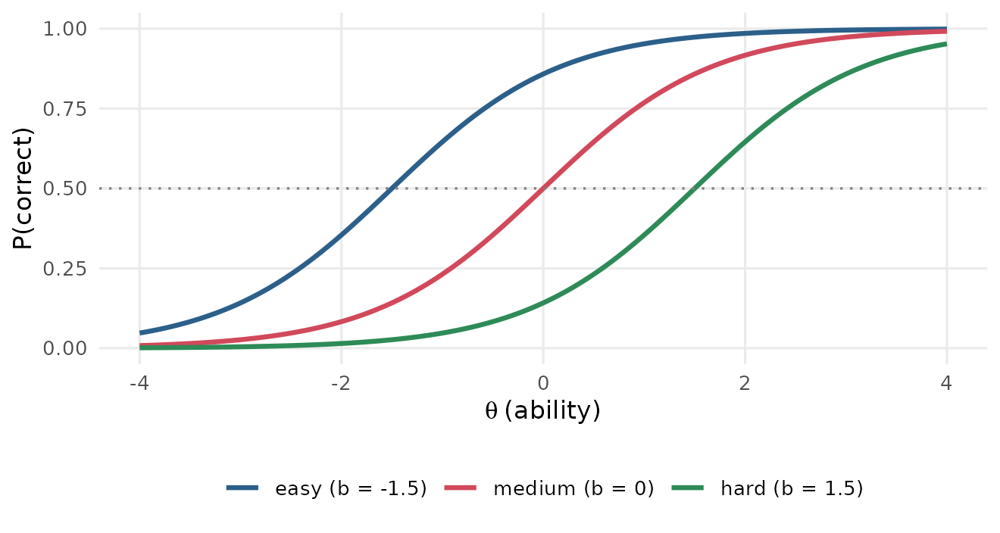
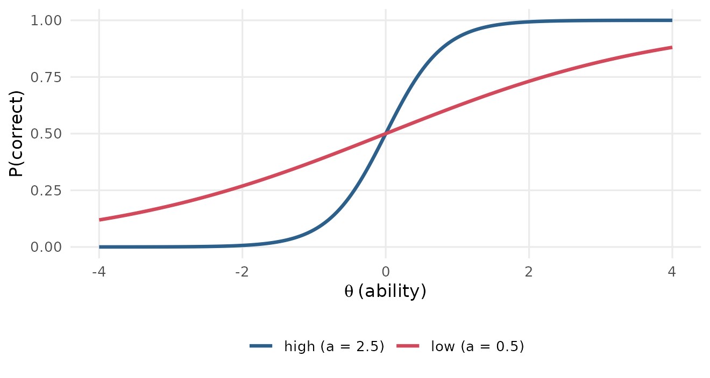
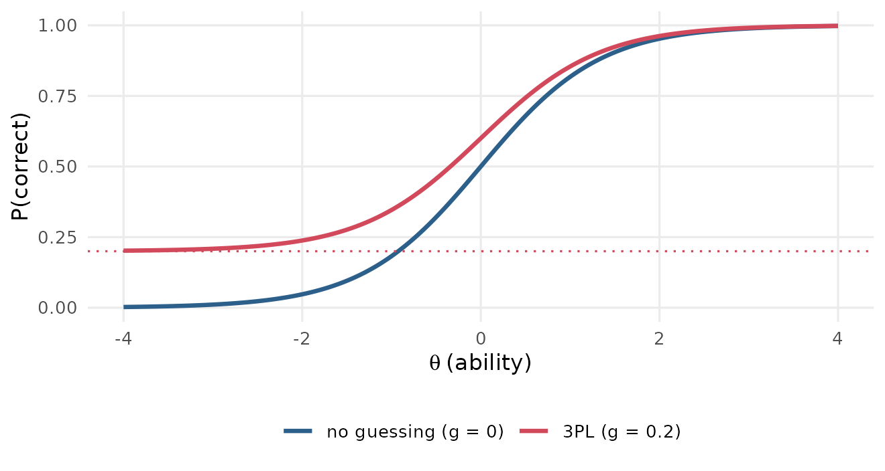
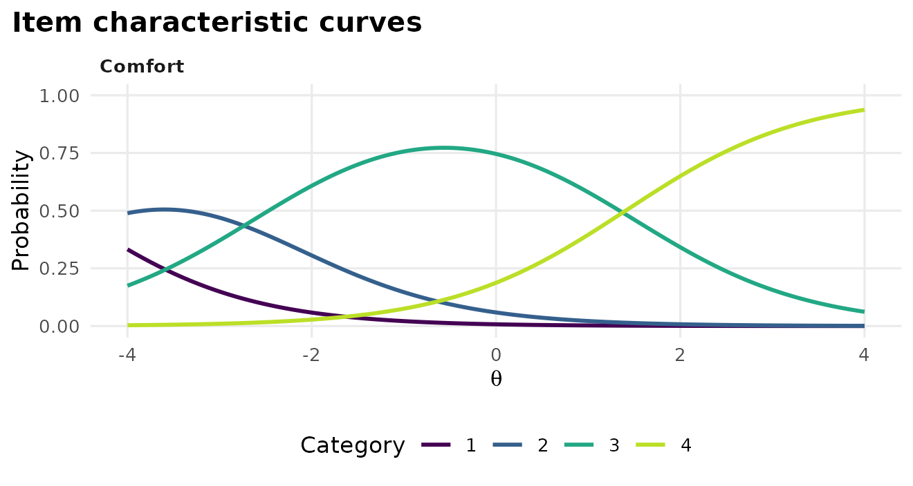
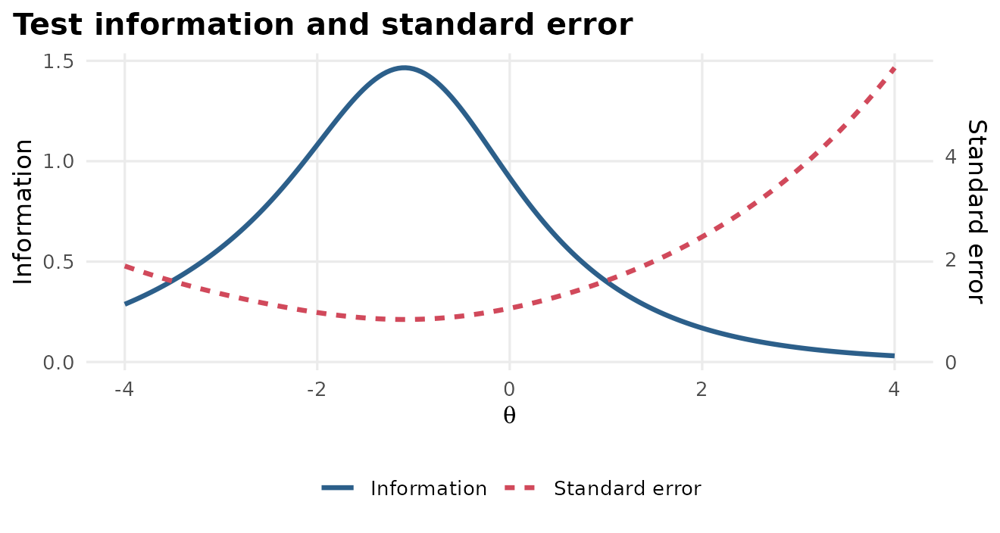
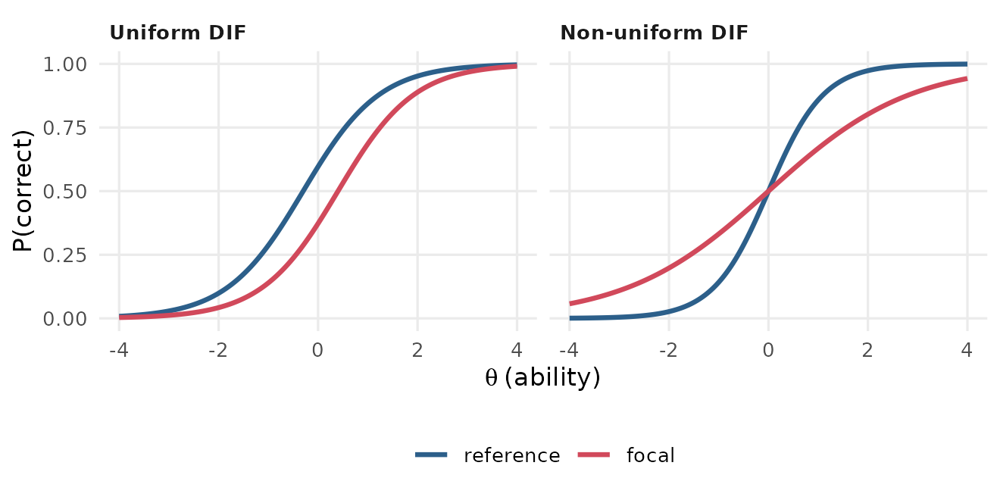
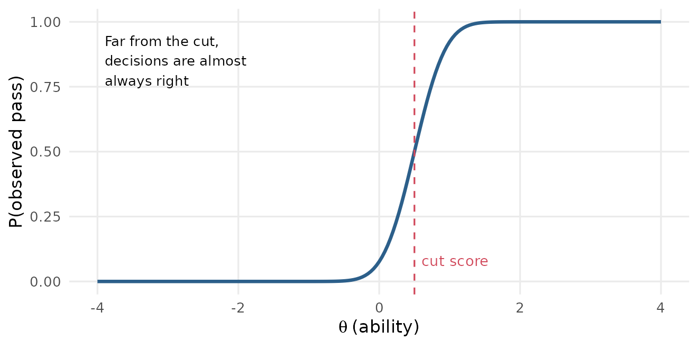

This page explains the words you will meet in item response theory (IRT) courses, papers and mirtverse output. Each entry gives a plain-language definition, then In R: the mirtverse or mirt function that computes or shows it. Function names link to their help pages.
The entries are grouped in the order a course usually meets them, from the basic ideas to test design. Use the A to Z index below to jump to a term, or your browser’s search (Ctrl+F or Cmd+F) to find a word.
To try the code, load the package and fit a model to one of the example datasets that come with mirt:
library(mirtverse)
mod <- mirt(expand.table(LSAT7), 1) # five 0/1 items, 2PL modelA to Z index
A Ability · AIC, BIC and SABIC · Anchor items · Angoff method · Answer copying · Automated test assembly B Bookmark method C Calibration · Category response curve · CFI and TLI · Classical test theory · Classification accuracy · Classification consistency · Computerized adaptive test · Conditional standard error · Convergence · Cut score D Dichotomous item · Difficulty · Differential item functioning · DIF effect size · Dimensionality · Discrimination E EAP · EM algorithm · Empirical item curve · Equating · Expected score · Exposure F Factor score · Fixed form · Focal group G Generalized partial credit model · Graded response model · Guessing H Haebara method I Information criteria · Item · Item bank · Item characteristic curve · Item difficulty (classical) · Item fit · Item information · Item parameters · Item response theory · Item-total correlation K Kappa L Latent trait · Likelihood-ratio test · Linking · Local dependence · Local independence · Logit · Lower asymptote M M2 · MAP · Marginal maximum likelihood · Marginal reliability · Maximum likelihood scoring · Mean-sigma and mean-mean · Model fit · Multidimensional IRT · Multistage test N Non-uniform DIF O One-parameter logistic model P Parallel forms · Parameter drift · Person fit · Person score · Polytomous item · Preknowledge · p-value (item) Q Q3 · Quadratic weighted kappa R Rapid guessing · Rasch model · Reference group · Reliability · Response probability · Response time effort · RMSEA S S-X2 · Slope-intercept form · Speed · SRMSR · Standard error (of a parameter) · Standard error of measurement · Standard setting · Stocking-Lord method · Sum score T Targeting · Test characteristic curve · Test information · Theta · Three-parameter logistic model · Threshold · Time intensity · Two-parameter logistic model U Uniform DIF · Unidimensionality · Upper asymptote W WLE · Wright map Z Zh
The basic ideas
Item response theory
A family of statistical models that link a person’s answers to test items with an unobserved trait, such as math ability or anxiety. Each item gets its own parameters (how hard it is, how well it separates people), so the model can say how likely any person is to give any answer. Unlike a sum score, an IRT score accounts for which items a person answered correctly, and its precision can be stated at every level of the trait.
In R: mirt::mirt() fits the model;
tidy() lists the item parameters and
interpret() describes the results in sentences.
Latent trait (theta)
The characteristic a test is meant to measure but that cannot be observed directly, such as reading ability. It is written with the Greek letter theta (θ). Theta is usually scaled so that the group the test was calibrated on has a mean of 0 and a standard deviation of 1, so θ = 1 means “one standard deviation above the average test taker”.
In R: fscores() estimates each person’s
theta; augment() adds the estimates to your data.
Ability
The everyday name for the latent trait in achievement tests. On a survey the same quantity might be called an attitude or a symptom level; the mathematics is the same.
Logit
The unit of the theta scale in logistic IRT models. A logit is the logarithm of the odds of a correct answer. A one-logit gap between a person’s ability and an item’s difficulty changes the odds of success by a factor of about 2.7, whatever the starting point.
Item
One question, task or statement on a test or questionnaire. In R each item is one column of the response data, and each row is one person.
In R: profile_data() summarises the
columns of a dataset; mirt::key2binary() turns
multiple-choice answers into 0/1 scores.
Dichotomous item
An item scored in two categories, usually 0 (wrong) and 1 (right). True/false and scored multiple-choice items are dichotomous.
Polytomous item
An item with more than two ordered score categories, such as a rating scale (strongly disagree to strongly agree) or an essay scored 0 to 4.
In R: fit with itemtype = "graded" or
"gpcm" in mirt::mirt().
Sum score
The number of points a person earns, added up over the items (also called the raw or number-correct score). It is easy to explain but treats every item as equally important and gives no item-by-item view of precision.
In R: rowSums(data);
mirt::itemstats() reports the sum-score distribution.
Classical test theory
The older framework that IRT builds on. It describes a test with sum-score statistics such as item p-values, item-total correlations and coefficient alpha. These statistics depend on the group that took the test, while IRT item parameters (once on a common scale) do not.
In R: mirt::itemstats();
item_table() shows classical and IRT statistics side by
side.
Item p-value (classical difficulty)
The proportion of people who answered an item correctly (or the mean item score for polytomous items). Despite the name, a high p-value means an easy item. It is not the same as the p-value of a significance test.
In R: the mean column of
item_table().
Item-total correlation
The correlation between an item score and the sum of the other items. It is the classical index of discrimination: low or negative values (below about 0.2) suggest a miskeyed, confusing or off-topic item.
In R: the item_total_r column of
item_table().
Dimensionality and unidimensionality
The number of distinct traits a test measures. Most IRT models used in practice are unidimensional: they assume one trait explains how people answer. If a math test also measures reading speed, a one-dimensional model may misfit.
In R: compare mirt(data, 1) with
mirt(data, 2) using anova();
select_model() can include a two-factor candidate with
dims = 1:2.
Local independence
The assumption that, for people at the same theta, answers to different items are unrelated: once ability is known, getting item 3 right tells you nothing more about item 4. It is what lets the model multiply item probabilities together. See local dependence for how it fails.
Models
Rasch model (1PL)
The simplest IRT model for 0/1 items. Each item has only a difficulty; all items are assumed to discriminate equally. Under the Rasch model the sum score contains all the information about ability, which is why it is popular for tests that must be scored by hand. The one-parameter logistic (1PL) model is the same model with the common discrimination estimated rather than fixed at 1.
In R:
mirt(data, 1, itemtype = "Rasch").
Two-parameter logistic model (2PL)
Adds a discrimination parameter to each item, so some items can separate people more sharply than others. The probability of a correct answer is
where a is the discrimination and b the difficulty.
In R: mirt(data, 1, itemtype = "2PL")
(the default for 0/1 items).
Three-parameter logistic model (3PL)
Adds a lower asymptote g (often called c) for multiple-choice items, where even very low-ability test takers can guess right:
The 3PL needs large samples to estimate well; with fewer than about 1,000 people the guessing parameters are often unstable.
In R: mirt(data, 1, itemtype = "3PL").
select_model() compares the Rasch, 2PL and 3PL models for
you and explains its choice.
Graded response model
A model for ordered polytomous items, such as rating scales. It models the probability of scoring in or above each category with a 2PL-like curve, so an item with k categories has one discrimination and k − 1 thresholds.
In R:
mirt(data, 1, itemtype = "graded").
Generalized partial credit model (GPCM)
Another model for ordered categories. It models each step from one category to the next (from 1 to 2, from 2 to 3) separately. Its step parameters can be out of order, which can reveal a category that is rarely the most likely response. The partial credit model is its Rasch version.
In R: mirt(data, 1, itemtype = "gpcm")
or itemtype = "Rasch" for polytomous data.
Multidimensional IRT
Models with two or more latent traits, each item loading on one or several of them. They are used when a test deliberately measures several skills, or to check whether a single trait is enough.
In R: mirt(data, 2) for an exploratory
two-factor model, or a mirt::mirt.model() specification for
a confirmatory structure.
Item parameters and curves
Item parameters
The numbers that describe how an item behaves: discrimination, difficulty and, in some models, guessing and an upper asymptote. They are estimated once, during calibration, and then reused to score anyone who takes the item.
In R: tidy() returns one row per
parameter; coef(mod, IRTpars = TRUE, simplify = TRUE) is
the mirt equivalent.
Item characteristic curve (ICC)
The S-shaped curve that shows the probability of a correct answer at every level of theta. It is also called a trace line. The steepness of the curve is the discrimination; its location is the difficulty.

In R: gg_trace(mod);
mirt::itemplot() for one item.
Difficulty (location, b)
The point on the theta scale where the item characteristic curve crosses a 50% chance of success (for the 2PL and Rasch models). An item with b = 1 is answered correctly by half the people whose ability is one standard deviation above average. Higher b means a harder item. For polytomous items the location is usually the mean of the thresholds.
In R: the b rows of
tidy(), or the location column of
item_table().
Discrimination (slope, a)
How steeply the item characteristic curve rises: how sharply the item separates people just below its difficulty from people just above it. Values around 1 to 2 are typical. Values below about 0.5 mean the item tells you little about ability; negative values usually mean a miskeyed item.

In R: the a rows of
tidy(), or the discrimination column of
item_table(), which flags low values.
Guessing (lower asymptote, c or g)
The chance that a person with very low ability still answers correctly, the height of the curve’s left tail. For a four-option multiple-choice item it is often near 0.20 to 0.25. Only the 3PL and 4PL models estimate it.

In R: the g rows of tidy()
for a 3PL model.
Upper asymptote (u)
The highest probability of success, even for very able people. It is 1 in most models; the four-parameter (4PL) model estimates it, for example when able test takers sometimes slip on an item.
In R: itemtype = "4PL"; the
u rows of tidy().
Slope-intercept form
The way mirt stores parameters internally: the 2PL is written as 1 / (1 + exp(−(aθ + d))), where d is an intercept, rather than with the difficulty b. The two are related by b = −d / a. Multidimensional models are always reported this way, because one difficulty no longer makes sense.
In R: coef(mod) gives slope-intercept
values, coef(mod, IRTpars = TRUE) the traditional ones;
tidy(mod, IRTpars = FALSE) does the same.
Threshold
For a polytomous item, the point on the theta scale where a person becomes more likely to score in a higher category than in the one below (GPCM), or has a 50% chance of scoring in or above a category (graded model). An item with five categories has four thresholds.
In R: the b1, b2, … rows
of tidy().
Category response curve
For a polytomous item, one curve per score category showing how likely each category is at every theta. Low categories dominate on the left, high ones on the right. A category that is never the most likely anywhere may be redundant.

In R: gg_trace(mod) for polytomous
items (shown above for the first item of the Science
data).
Expected score
The average score a person at a given theta would get on an item: the probability of success for a 0/1 item, or the probability-weighted average category for a polytomous one. Summed over items it gives the test characteristic curve.
In R: mirt::expected.item();
gg_trace(mod, type = "expected").
Test characteristic curve (TCC)
The expected sum score at every level of theta, found by adding up the item curves. It converts between the theta scale and the sum-score scale, and is the basis of characteristic-curve linking.
In R: mirt::expected.test();
plot(mod, type = "score").
Estimating the model and scoring people
Calibration
Estimating the item parameters from a sample of responses. A calibration sample should be large enough for the model (a few hundred people for the Rasch model, 500 or more for the 2PL, often 1,000 or more for the 3PL) and similar to the people who will take the test.
In R: mirt::mirt(); in a pipeline,
calibrate().
Marginal maximum likelihood and the EM algorithm
The standard way of estimating item parameters. It finds the item parameters that make the observed responses most likely, averaging over the unknown abilities instead of estimating them at the same time. The EM (expectation-maximization) algorithm does this in cycles until the estimates stop changing.
In R: the default method = "EM" in
mirt::mirt().
Convergence
Whether the estimation algorithm reached a stable solution. A model
that has not converged should not be used: try more cycles
(technical = list(NCYCLES = 2000)), a simpler model or
better starting values.
In R: the converged column of
glance(); extract.mirt(mod, "converged").
Standard error (of a parameter)
How uncertain an estimated item parameter is. Small samples, extreme items and complex models give large standard errors.
In R: fit with SE = TRUE, then
tidy(mod, conf.int = TRUE) adds the standard errors and
confidence limits.
Person score (ability estimate)
An estimate of a person’s theta from their answers and the item parameters. mirt calls these factor scores. The main methods differ mostly for people with very high, very low or very short response patterns.
In R: fscores(mod, method = "EAP");
augment() adds scores and their standard errors to the
data; score_persons() does it in a pipeline;
gg_scores() plots their distribution.
EAP (expected a posteriori)
The average of the possible theta values, weighted by how well each fits the person’s answers and by a prior distribution (usually standard normal). It always gives a finite score, even for all-correct patterns, but pulls scores slightly toward the mean. It is mirt’s default.
In R: fscores(mod, method = "EAP").
MAP (maximum a posteriori)
The single most likely theta once the prior is taken into account. Similar to EAP, with a little more pull toward the mean.
In R: fscores(mod, method = "MAP").
Precision and targeting
Item information
How much an item reduces uncertainty about theta at each ability level. An item is most informative near its difficulty, and more discriminating items give more information. Information is what makes items “work” for some people and not others: a hard item tells you a lot about strong students and almost nothing about weak ones.
In R: gg_info(mod, type = "items");
mirt::iteminfo().
Test information
The sum of the item informations: how precisely the whole test measures at each theta. A test built to make pass/fail decisions should have its peak near the cut score.
Standard error of measurement (conditional SEM)
How far a person’s estimated theta is likely to be from their true theta. In IRT it depends on theta: SEM = 1 / √(test information), so it is smallest where the test has the most information. A standard error of 0.3 means a 95% interval of about ±0.6 around the estimate.

In R: gg_info(mod) shows information
and SEM together (above, for the LSAT7 data);
gg_info(mod, type = "se") shows the SEM alone. The standard
errors of individual scores come from
fscores(mod, full.scores.SE = TRUE) or
augment().
Marginal reliability
A single summary of precision for a whole population, on the familiar 0-to-1 reliability scale: the share of the variance in theta estimates that is true differences between people rather than measurement error. Above 0.90 is excellent, 0.80 good and 0.70 acceptable for most uses.
In R: the reliability column of
glance(); mirt::marginal_rxx();
mirt::empirical_rxx() for reliability of the estimated
scores.
Targeting
How well the difficulty of the items matches the ability of the people. A well-targeted test has items spread where the people are. A test that is too easy gives little information about the strongest test takers.
In R: gg_wright();
interpret() comments on targeting.
Checking the model
Model fit
How well the model as a whole reproduces the data. In IRT it is usually judged with limited-information statistics such as M2 and the indices derived from it. Poor fit can come from the wrong model, more than one dimension, or a few bad items.
In R: glance() reports M2, RMSEA,
SRMSR, CFI and TLI in one row; mirt::M2() gives the
details.
M2
A chi-square test of model fit based on the pairs of items (how often each pair is answered correctly together). With large samples it almost always rejects, so the effect-size indices below matter more. For polytomous items mirtverse uses the related C2 statistic.
In R: the M2, df and
p.value columns of glance().
RMSEA
Root mean square error of approximation: misfit per degree of freedom, where 0 is perfect. Common guidelines are below 0.05 for close fit and below 0.08 for reasonable fit. The same index is reported for each item from the S-X2 statistic.
In R: the RMSEA column of
glance() (model) and of item_table()
(items).
SRMSR
Standardized root mean square residual: the average difference between the observed and model-implied correlations between items. Values below about 0.05 indicate good fit.
In R: the SRMSR column of
glance().
CFI and TLI
Comparative fit indices that compare the model with a baseline in which the items are unrelated. Values of 0.95 or above are usually taken as good fit.
In R: the CFI and TLI
columns of glance().
Information criteria (AIC, BIC, SABIC)
Numbers for comparing models fitted to the same data: they reward fit and penalise extra parameters. Smaller is better. BIC penalises complexity more than AIC and tends to choose simpler models; SABIC is in between.
In R: the AIC, BIC and
SABIC columns of glance();
select_model() uses BIC by default;
anova(mod1, mod2).
Likelihood-ratio test
A significance test comparing two nested models, where one is a special case of the other (the Rasch model is a 2PL with equal slopes). A small p-value means the more complex model fits significantly better.
In R: anova(mod_rasch, mod_2pl); the
lrt element of select_model().
Item fit
Whether each item behaves the way the model predicts. A misfitting item may be poorly written, miskeyed, or measuring something else.
In R: item_table() (with a
flag column), gg_itemfit(),
mirt::itemfit(); item_card() for one item in
depth.
S-X2
The most widely used item-fit statistic for IRT (Orlando and Thissen). It groups people by sum score and compares the observed proportion correct in each group with the model’s prediction. A small p-value signals misfit; with many items, adjust the p-values for multiple testing.
In R: the S_X2, p.value
and RMSEA columns of item_table();
gg_itemfit() plots them.
Empirical item curve
The observed proportion correct in groups of people with similar ability, plotted over the model’s curve. When the dots follow the line, the item fits.
In R: gg_empirical(mod, item = 1);
mirt::itemfit(mod, empirical.plot = 1).
Local dependence
When two items are related beyond what the trait explains, breaking local independence. Common causes are items that share a reading passage, items where one answer gives away another, or near-duplicate wording. It makes the test look more reliable than it is.
In R: gg_q3();
residuals(mod, type = "Q3").
Q3
Yen’s Q3 statistic: the correlation between two items’ residuals (observed minus expected score) after the trait is taken out. Pairs whose Q3 is more than 0.2 above the average Q3 are worth a look.
In R: gg_q3(mod) draws a heatmap and
marks the flagged pairs.
Person fit
Whether a person’s pattern of answers is consistent with the model, for example a person who misses easy items but gets hard ones right. Misfit can mean guessing, cheating, carelessness or a scoring error.
In R: mirt::personfit();
interpret() reports the share of people flagged.
Fairness
Differential item functioning (DIF)
An item has DIF when people from different groups who have the same ability have different chances of answering it correctly. DIF is not the same as a group difference in average scores: groups can truly differ in ability. DIF means the item itself behaves differently, for example because of a word that is harder in translation.
In R: dif(data, group = "language")
tests every item and reports effect sizes; gg_dif() plots
them; mirt::DIF() gives more control.
Reference and focal groups
In a DIF study, the reference group is the comparison group (often the majority) and the focal group is the one whose fairness is in question.
In R: the reference and
focal elements of dif().
Uniform and non-uniform DIF
With uniform DIF the item is harder for one group at every ability level (the curves are shifted). With non-uniform DIF the gap changes with ability and the curves can cross, so the item favours one group at low ability and the other at high ability.

In R: dif() tests all the item
parameters by default, so it finds both kinds; the uesd
effect size captures crossing curves.
DIF effect size
How big the DIF is, in score units, rather than just whether it is
statistically significant. mirtverse reports the expected score
difference between focal and reference group at the same ability,
averaged over the focal group: esd is signed (positive
means the item favours the focal group) and uesd unsigned.
For 0/1 items these are differences in probability, so 0.05 means five
percentage points.
In R: the esd and uesd
columns of dif().
Anchor items
Items assumed to be free of DIF (in a DIF study) or shared by two forms (in linking). They hold the scale in place while other items are compared.
In R: the items argument of
dif() (untested items act as anchors);
link_to_bank() finds the anchors shared with a bank.
Scales, linking and item banks
Linking and equating
Putting results from different test forms or administrations on the same theta scale. Each calibration sets its own zero point (the mean of its sample), so parameters from two calibrations cannot be compared until they are linked through common anchor items or common people. Equating is linking strict enough that scores on the forms can be used interchangeably.
In R: link_to_bank();
mirt::multipleGroup() for concurrent calibration.
Characteristic-curve linking (Stocking-Lord and Haebara)
Methods that find the linear transformation (θ on the bank scale = A × θ + B) that makes the anchor items’ curves from the new calibration match their bank curves. Stocking-Lord matches the test characteristic curve; Haebara matches each item curve.
In R:
link_to_bank(p, bank, method = "stocking-lord") (the
default) or method = "haebara".
Mean-sigma and mean-mean linking
Simpler linking methods that set A and B from the means and standard deviations of the anchor items’ difficulties (mean-sigma) or the means of their difficulties and discriminations (mean-mean).
In R:
link_to_bank(p, bank, method = "mean-sigma").
Item bank
A collection of calibrated items on one common scale, with their parameters, content codes and history, from which tests are built.
In R: mv_bank() starts a bank,
bank_items() adds items, monitor_bank() checks
its health over time and retire_items() takes items
out.
Parameter drift
When an item’s parameters change over time, for example because it has leaked or the curriculum has changed. Drifting items should not be used as anchors.
In R: check_security() flags drift
against the bank.
Making decisions with scores
Cut score
The score that separates two decisions or performance levels, such as pass and fail, or “basic” and “proficient”. It can be set on the theta scale or on the sum-score scale.
In R: set_cuts().
Standard setting (Bookmark and Angoff)
Structured procedures in which a panel of experts decides where cut scores should be. In the Bookmark method panelists page through the items ordered from easiest to hardest and place a bookmark where a just-qualified person would stop succeeding. In the Angoff method panelists estimate, item by item, the probability that a just-qualified person would answer correctly.
In R: item_map() builds the ordered
item booklet for a Bookmark panel;
set_cuts(p, panel = ratings) turns the panel’s ratings into
cuts.
Response probability (RP)
The chance of success used to place items on the scale for a Bookmark booklet. With RP67, each item is located where a person has a two-in-three chance of answering correctly.
In R: the rp argument of
item_map() (0.67 by default).
Classification accuracy
The probability that a person is put in the category their true ability belongs to. Errors are most likely for people near the cut, which is why a test should be most precise there.

In R: set_cuts() reports it overall and
by cut, with false positive and false negative rates.
Classification consistency
The probability that two parallel administrations of the test would put a person in the same category. A test can be consistent without being accurate, but not the other way round.
In R: set_cuts().
Kappa
Cohen’s kappa is agreement corrected for chance: 0 means no better than chance, 1 means perfect agreement. It is reported with classification consistency.
In R: set_cuts().
Building tests
Automated test assembly
Choosing items from a bank by optimisation so that a fixed form meets its blueprint (so many algebra items, so many geometry items), keeps apart enemy items that give each other away, and is as informative as possible where it matters, such as at the cut score.
In R: assemble_forms(), with the
blueprint from set_blueprint().
Parallel forms
Two or more test forms with different items but nearly the same test information and content, so it should not matter which one a person takes.
In R: assemble_forms(p, n_forms = 2)
builds them and checks that their information agrees.
Computerized adaptive test (CAT)
A test that picks each next item for the person taking it, usually the item with the most information at their current ability estimate. CATs reach the same precision as a fixed form with far fewer items, but need a large, well-calibrated bank.
In R: simulate_cat() shows how long,
precise and secure a CAT from your bank would be; the mirtCAT package
runs real ones.
Multistage test (MST)
A test that adapts between blocks of items (modules) instead of after every item: everyone starts with the same routing module, then moves to an easier or harder module depending on their score.
In R: assemble_mst().
Exposure
The share of test takers who see an item. Items with high exposure are more likely to be shared or memorised. CATs need exposure control because the best items would otherwise be given to everyone.
In R: simulate_cat() reports exposure
(use randomesque to spread it); monitor_bank()
tracks it over time.
Response times
Time intensity
How long an item typically takes, on a log-seconds scale: the response-time counterpart of difficulty. In van der Linden’s lognormal model it is written β (beta).
In R: fit_rt(); see the response times article.
Speed
A person’s working pace, the response-time counterpart of ability (written τ, tau). Speed and ability are separate traits, though they are often correlated.
In R: fit_rt() estimates each person’s
speed and its correlation with ability.
Open-ended responses and security
Quadratic weighted kappa (QWK)
Agreement between two raters (two humans, or a human and a machine) on an ordered score scale. Disagreements count more the further apart the scores are. Values of 0.70 or above are a common minimum for automated scoring.
In R: score_open() checks machine
scores against human scores with QWK before they are used.
Preknowledge
When test takers have seen some items before the test, so they do much better on those items than their ability on the others would predict.
In R:
check_security(p, leaked = c(...)).
Answer copying
Pairs of test takers who share many more identical wrong answers than their scores would lead you to expect. A flag is evidence for an investigation, not proof.
In R: check_security().
Where to go next
- The Get started article walks through a complete analysis using most of these terms.
- The teaching labs let you practise the decisions behind them on a realistic exam.
-
interpret(mod)explains a fitted model in sentences, anditem_card(mod, 1)shows everything about one item on a single card.